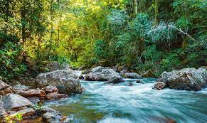

CATALOGO DE NOVIDADES
TURISMO 1

- Preço baixo
- Guia turistíco
- Proteção aos animais
- Proteção pessoal
- Desconto por família (4 a +5)
TURISMO 2
- Estudos científicos sobre animais raros
- Guia turistíco
- Analise ambiental e socioecologico
- Cuidado com animais por profissionais especializados
Videos de demonstracao chamam atencao mundial dos internautas
Brasil reforçando sua biodiversidade e aumentando sua sustentabilidade e carinho a nação
Parceria com Maldivas
- Super desconto de R$50.000reais para R$33.000 reais
- Acordo com Empresários Ásiaticos
- Conforto Garantido
- Ótimo atendimento ao cliente
- Passagem para os 1000 sorteados de graça
Atualizações em andamento . . .
© Wanderson,Iury,Ludmilla,Juliano,Lucas,Sávio